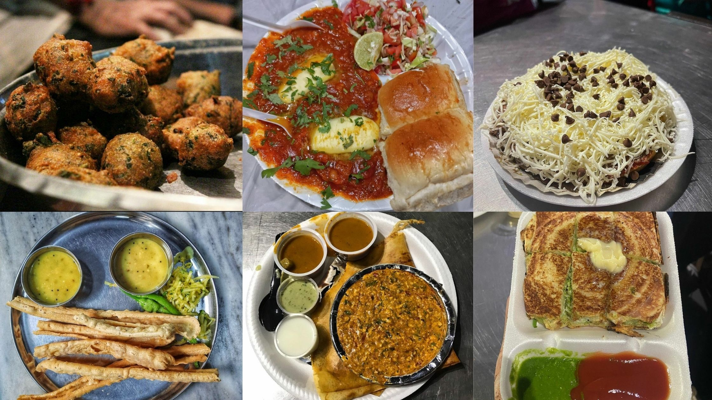
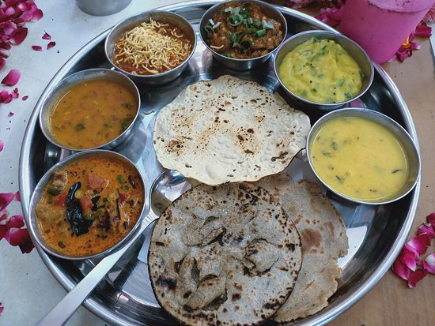
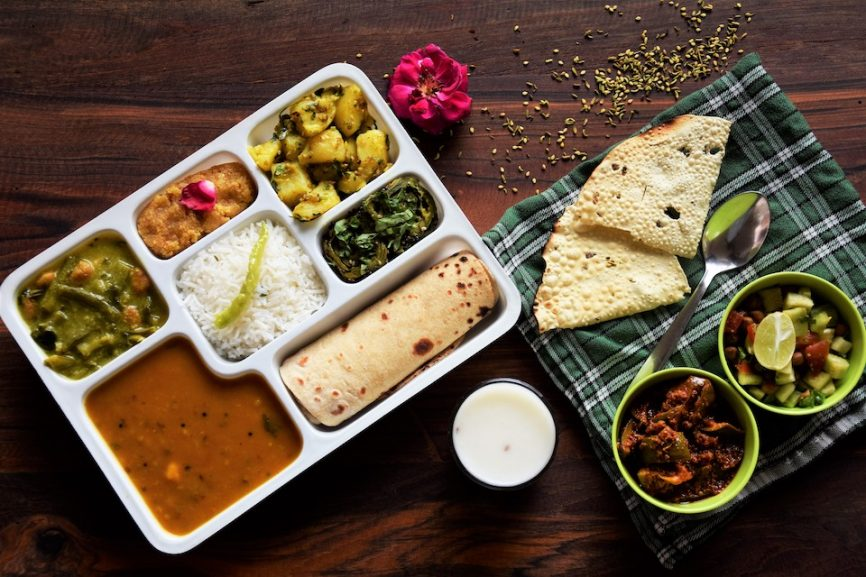

Restaurants in Ahmedabad (Click to view their locations)
Ahmedabad, the vibrant city of Gujarat, is not only famous for its rich cultural heritage and historical landmarks but also for its delectable street food scene. The city's culinary delights are as diverse as its people, reflecting a fusion of traditional Gujarati flavours and influences from other parts of India. Exploring the bustling streets of Ahmedabad, one will encounter an array of lip-smacking street food offerings that tantalise the taste buds and leave an everlasting impression. From savoury snacks to sweet treats, the city's street food culture is a treasure trove of authentic culinary experiences.
- Gordhan Thal (Authentic Gujarati Thali)
- Rajwadu (Rajwadu Special Dalbaati)
- Jassi De Parathe (Punjabi Dishes)
- Vishalla ( classic village sharing platters)
- Agashiye (Terrace restaurant serving traditional Gujarati dishes)
- patang hotel(Revolving resturant serving best salad and veg food) 
- Atithi(Gujrati Thali)
- Barbeque nation(Veg and non veg buffer)
- silver dine(North Indian Food)
- Bayleaf(Classic North Indian Dishes)
- 